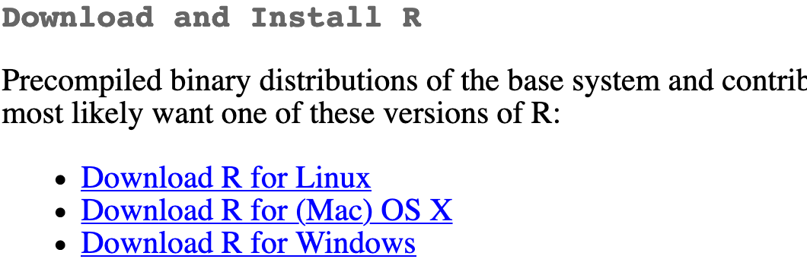
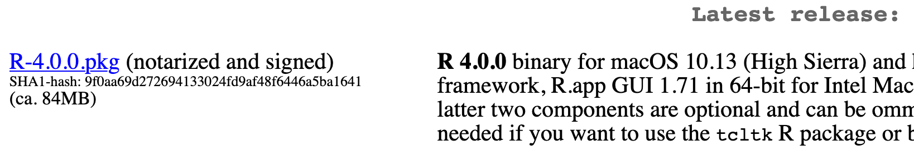
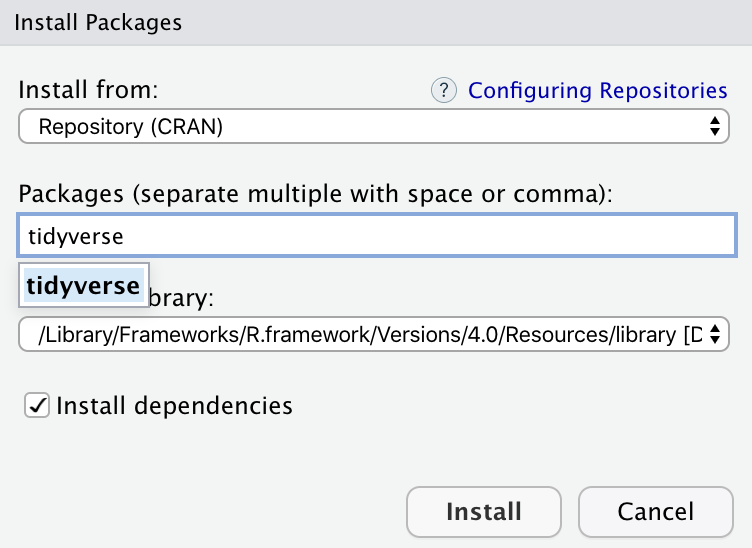

Getting Started with R
1 R and RStudio
We will do all of your analysis with the open source (and free!) programming language R. We will use RStudio as the main program to access R. Think of R as an engine and RStudio as a car dashboard—R handles all the calculations produces the actual statistics and graphical output, while RStudio provides a nice interface for running R code.
2 Online Help
Data science and statistical programming can be difficult. Computers are stupid and little errors in your code can cause hours of headache (even if you’ve been doing this stuff for years!).
Fortunately there are tons of online resources to help you with this. Two of the most important are StackOverflow (a Q&A site with hundreds of thousands of answers to all sorts of programming questions) and Posit Community (a forum specifically designed for people using RStudio and the tidyverse (i.e. you)).
If you use Mastodon or Twitter/X, post R-related questions and content with #rstats. The community there is exceptionally generous and helpful.
ChatGPT is generally relatively okay with R questions, but it may hallucinate responses—it sometimes imagine packages that don’t exist and then give you answers with them. Think of it as glorified autocomplete. I’d encourage you to read the first few paragraphs here about a few important things to keep in mind when using ChatGPT, though.
Searching for help with R on Google can sometimes be tricky because the program name is, um, a single letter. Google is generally smart enough to figure out what you mean when you search for “r scatterplot”, but if it does struggle, try searching for “rstats” instead (e.g. “rstats scatterplot”). Also, since most of your R work will deal with {ggplot2}, it’s often easier to just search for that instead of the letter “r” (e.g. “ggplot scatterplot”).
3 Installation Guide
3.1 Install R
First you need to install R itself (the engine).
Go to the CRAN (Collective R Archive Network) website: https://cran.r-project.org/
Click on “Download R for
XXX”, whereXXXis either Mac or Windows: - If you use macOS, scroll down to the first
.pkgfile in the list of files (in this picture, it’sR-4.0.0.pkg; as of right now, the current version is 4.4.1) and download it.

- If you use Windows, click “base” (or click on the bolded “install R for the first time” link) and download it.

- If you use macOS, scroll down to the first
Double click on the downloaded file (check your
Downloadsfolder). Click yes through all the prompts to install like any other program.If you use macOS, download and install XQuartz. You do not need to do this on Windows.
3.2 Install RStudio
Next, you need to install RStudio, the nicer graphical user interface (GUI) for R (the dashboard). Once R and RStudio are both installed, you can ignore R and only use RStudio. RStudio will use R automatically and you won’t ever have to interact with it directly.
Go to the free download location on RStudio’s website: https://www.rstudio.com/products/rstudio/download/#download
The website should automatically detect your operating system (macOS or Windows) and show a big download button for it:

If not, scroll down a little to the large table and choose the version of RStudio that matches your operating system.

Double click on the downloaded file (again, check your
Downloadsfolder). Click yes through all the prompts to install like any other program.
Double click on RStudio to run it (check your applications folder or start menu).
3.3 Install tidyverse
R packages are easy to install with RStudio. Select the packages panel, click on “Install,” type the name of the package you want to install, and press enter. 
This can sometimes be tedious when you’re installing lots of packages, though. The tidyverse, for instance, consists of dozens of packages (including {ggplot2}) that all work together. Rather than install each individually, you can install a single magical package and get them all at the same time.
Go to the packages panel in RStudio, click on “Install,” type “tidyverse”, and press enter. You’ll see a bunch of output in the RStudio console as all the tidyverse packages are installed. 
Notice also that RStudio will generate a line of code for you and run it: install.packages("tidyverse"). You can also just paste and run this instead of using the packages panel.
3.4 Install tinytex (Optional, this is for rendering PDF files)
When you knit to PDF, R uses a special scientific typesetting program named LaTeX (pronounced “lay-tek” or “lah-tex”; for goofy nerdy reasons, the x is technically the “ch” sound in “Bach”, but most people just say it as “k”—saying “layteks” is frowned on for whatever reason).
LaTeX is neat and makes pretty documents, but it’s a huge program—the macOS version, for instance, is nearly 4 GB! To make life easier, there’s an R package named {tinytex} that installs a minimal LaTeX program and that automatically deals with differences between macOS and Windows.
Here’s how to install {tinytex} so you can knit to pretty PDFs:
- Use the Packages in panel in RStudio to install {tinytex} like you did above with {tidyverse}. Alternatively, run
install.packages("tinytex")in the console. - Run
tinytex::install_tinytex()in the console. - Wait for a bit while R downloads and installs everything you need.
- The end! You should now be able to knit to PDF.
Credit: this installation guide was adpated from the guide by Dr Andrew Heiss at Georgia State University.